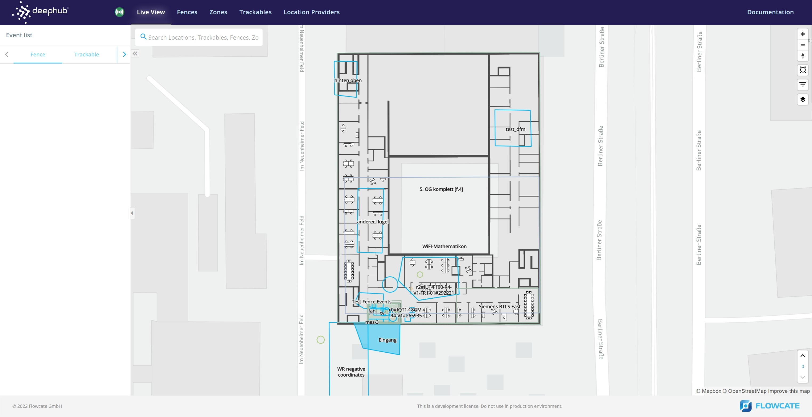
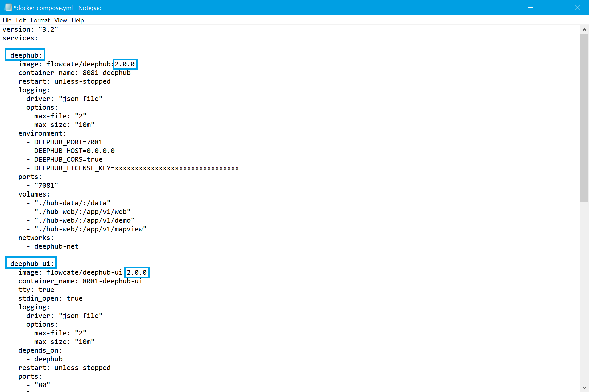

Running the DeepHub® Locally
Getting Started
This tutorial is designed for partners and customers as a step-by-step guide when working with the DeepHub®. It includes the following sections:
System Prerequisites for the DeepHub® - This section provides information on prerequisites of the system in terms of the software tools and technical knowledge needed for the DeepHub® installation.
Install the DeepHub® - This section provides step-by-step instructions on how to install the DeepHub®.
User Instructions for the DeepHub® - This section provides essential information on how to operate the DeepHub® from the end user perspective.
System Prerequisites
Docker
Docker is an open-source project for automating the deployment of applications as portable, self-sufficient containers that can run on the cloud or on-premises. Docker image containers can run natively on Linux and Windows. Developers can use development environments on Windows, Linux, or macOS. On the development computer, the developer may run a Docker host where Docker images are deployed.
Image : A Docker image is a file, comprised of multiple layers, that is used to execute code in a Docker container. It is a package that contains all necessary files for a containerized application to run. When the Docker user runs an image, it can become one or multiple instances of the container.
Container : An instance of a Docker image. A container represents the execution of a single application, process, or service. It consists of the contents of a Docker image, an execution environment, and a standard set of instructions.
Docker Compose : A tool for defining and running multi-container Docker applications.
Based on your operating system, you can download and install Docker Desktop here: Docker Desktop. While installing Docker on your machine, ensure you allow the installation to bypass any firewall settings (if prompted). Once the installation process is complete, your machine will restart.
Note
When Docker Desktop is installed on Windows, the entire package is installed (including the Docker Compose). With Ubuntu, the user needs to install Docker and the Docker Compose separately.
Windows PowerShell or Command Prompt
A shell is a user interface that gives you access to various services of an operating system. A shell can be command-line based, or it can include a graphical user interface (GUI). Windows PowerShell is a shell developed by Microsoft for task automation and configuration management. It is cross-platform and consists of a command-line shell and scripting language. PowerShell capabilities allow users to simplify and automate repetitive tasks by creating scripts and combining multiple commands. The Windows operating system comes with Windows PowerShell pre-installed. However, Windows PowerShell can be installed for other operating systems here: Windows PowerShell. Aside from Windows PowerShell, the classic Windows Command Prompt is also pre-installed and can be used for tasks at hand.
Terminal for Linux & macOS
A terminal is a program that allows the use of the command-line in a graphical environment. In a Linux system, the shell is a command-line interface that interprets a user’s commands and script files, and notifies the server’s operating system what to do with them. Terminal is pre-installed on Linux and macOS. For more information, please read Ubuntu Tutorials.
Docker and Docker Compose
Using Docker or Docker Compose on Windows and Linux is done via a command line shell and is almost identical on both platforms. You can use PowerShell or Command Prompt on Windows and a shell like bash or zsh on Linux. Refer to DeepHub System Prerequisites for details.
Using Docker or Docker Compose
We recommend using Docker Compose because this way you will get a completely configured “system” consisting of the DeepHub®, the DeepHub® UI and a containerized web server, acting as a reverse proxy, to simplify the overall usage and interaction of these components.
We provide a Docker Compose file that configures the necessary orchestration between these three containers. Refer to the next section in this documentation concerning more details on this.
Nevertheless, you are able to pull just the Docker container that you need instead of all three.
docker pull flowcate/deephub:<tag of release you want to pull>
Note
The DeepHub® itself, as well as the corresponding DeepHub® UI, are available at the official docker repository here: Flowcate@docker.
Getting the Latest Docker Compose File
We provide a docker-compose.yml file and additional configuration files for orchestration of the DeepHub® itself, as well as the corresponding DeepHub® UI, in our Github repository: Flowcate@github.
We recommend creating a dedicated local directory on your filesystem where you store the docker-compose.yml and the aforementioned configuration files. The DeepHub® needs to create some additional files during operations and writes them to directories mounted from your host filesystem. This is done relative to the location of the docker-compose.yml file.
Start a DeepHub®
Open a shell (PowerShell or Command Prompt on Windows, a terminal on Linux)
Change to the directory where your docker-compose.yml file resides. Docker Compose won’t work if invoked outside this directory.
Invoke Docker Compose. It will take a few minutes to download the Docker images and set up the DeepHub®.
Example:
cd <directory where the docker-compose.yml is>
docker-compose up -d
Note
On Linux, it may be necessary to call docker-compose as superuser via the sudo command.
Now you have your own running DeepHub® instance that can be accessed with any modern web browser at the address: http://localhost:8081
To complement the DeepHub UI shown above, you may also make API calls to the DeepHub REST API while running the DeepHub locally. This can be done with a tool such as Postman or cURL.
The containerized web server included in the Docker Compose bundle acts as a reverse proxy - forwarding requests to either the DeepHub UI or DeepHub containers.
To interact with the REST API, you will need to use the following baseURL: http://localhost:8081/deephub/v1
For example, retrieve an array of all zones:
curl http://localhost:8081/deephub/v1/zones/summary | json_pp
Stop a running DeepHub®
Please make sure you are in the same directory where you invoked docker-compose.
To stop a running DeepHub®, execute ‘docker-compose down’. This ensures the running DeepHub® is stopped and allows the user to modify the configuration data.
cd <directory where the docker-compose.yml is>
docker-compose down
Note
On Linux, it may be necessary to call docker-compose as superuser via the sudo command.
Install Specific Version
It is possible to switch to a specific version of the DeepHub® instead of the latest one, if required.
Note
Before installing a specific version of the DeepHub®, it is mandatory to stop a running hub as described previously in the Stop a running DeepHub® section of the docker compose chapter of this guide.
Pulling Specific Containers
Open the “docker-compose.yml” file. Edit the version of the DeepHub® from “latest” to the desired version. For example, it can be modified from “latest” to “2.0.0”. Similarly, the version of DeepHub® UI can be adapted accordingly.
Now, the specified version is pulled when executing the following command:
docker-compose pull
To start the pulled version, use the typical command as described in section Start a DeepHub® of the docker compose chapter.
DeepHub® UI Configuration
Adding a Floorplan Image to the Map
The DeepHub UI can be configured so that a floorplan image of a building or a site can be displayed. You may choose to display the image by itself, or overlayed on top of the basemap of the mapping service provider (ex. MapTiler).
To begin, you will need to determine the latitude and longitude of your floorplan images’ corners.
Once this is done, navigate to the ‘/hub-web/nginx/webapp’ directory of your DeepHub bundle on your local filesystem. Create a new directory (ex. named ‘floorplan-image’) and add your floorplan image to this directory.
Next, download the Open Sans Semibold font by cloning this repository to your local filesystem. Follow the steps in the README.md to install the required packages and generate the fonts. The fonts will be in the ‘_output’ directory.
Note
Your machine will need Node.js installed to generate the fonts.
user@fc:~/projects/fonts/_output$ ls
'Metropolis Black' 'Metropolis Light' 'Metropolis Thin' 'Open Sans Extra Bold Italic' 'PT Sans Bold Italic' 'Roboto Black Italic' 'Roboto Condensed Regular' 'Roboto Thin Italic'
'Metropolis Black Italic' 'Metropolis Light Italic' 'Metropolis Thin Italic' 'Open Sans Italic' 'PT Sans Caption Regular' 'Roboto Bold' 'Roboto Italic'
'Metropolis Bold' 'Metropolis Medium' 'Noto Sans Bold' 'Open Sans Light' 'PT Sans Caption Web Bold' 'Roboto Bold Italic' 'Roboto Light'
'Metropolis Bold Italic' 'Metropolis Medium Italic' 'Noto Sans Italic' 'Open Sans Light Italic' 'PT Sans Italic' 'Roboto Condensed Bold' 'Roboto Light Italic'
'Metropolis Extra Bold' 'Metropolis Regular' 'Noto Sans Regular' 'Open Sans Regular' 'PT Sans Narrow Bold' 'Roboto Condensed Bold Italic' 'Roboto Medium'
'Metropolis Extra Bold Italic' 'Metropolis Regular Italic' 'Open Sans Bold' 'Open Sans Semibold' 'PT Sans Narrow Regular' 'Roboto Condensed Italic' 'Roboto Medium Italic'
'Metropolis Extra Light' 'Metropolis Semi Bold' 'Open Sans Bold Italic' 'Open Sans Semibold Italic' 'PT Sans Regular' 'Roboto Condensed Light' 'Roboto Regular'
'Metropolis Extra Light Italic' 'Metropolis Semi Bold Italic' 'Open Sans Extra Bold' 'PT Sans Bold' 'Roboto Black' 'Roboto Condensed Light Italic' 'Roboto Thin'
Within your newly-created ‘floorplan-image’ directory, create a new directory named ‘fonts’. Copy the ‘Open Sans Semibold’ font from the repository you just cloned to this new ‘fonts’ directory.
Displaying a Floorplan Image by Itself
Create a JSON file in your ‘floorplan-image’ directory that defines your map style. To display the floorplan image without the surrounding basemap, your file must be structured like the following:
{
"version": 8,
"id": "floorplan-style",
"name": "Floorplan Style",
"attribution": "Floorplan map",
"glyphs": "floorplan-image/fonts/{fontstack}/{range}.pbf",
"sources": {
"image": {
"type": "image",
"url": "floorplan-image/<YOUR FLOORPLAN IMAGE FILE>",
"coordinates": [
[
-115.16786551712569,
36.11988219161837
],
[
-115.1654992,
36.119895
],
[
-115.1649202,
36.118001
],
[
-115.1684502,
36.118023
]
]
}
},
"layers": [{
"id": "background",
"type": "background",
"paint": {
"background-color": "rgba(0,0,0,0)"
}
},
{
"id": "image-layer",
"type": "raster",
"source": "image",
"paint": {
"raster-fade-duration": 0
}
}
]
}
Note
You will need to change the coordinates in your JSON file to match the coordinates of your floorplan images’ corners. The first coordinate corresponds to the top left corner of the image, the 2nd coordinate corresponds to the top right corner of the image, etc.
Finally, the ‘deephub-ui’ service within the docker-compose.yml file of your DeepHub instance needs to be modified:
Set DOCKER_MAP_DEFAULT_STYLE=floorplan-image/<YOUR MAP STYLE JSON FILE>
Ensure that the “./hub-web/nginx/webapp/” volume on your local filesystem is mounted to “/webapp” of the Docker container
Start your DeepHub instance by invoking Docker Compose. When you open the DeepHub UI in your browser, you will need to modify the URL by including one pair of latitude and longitude coordinates. For example, to navigate to the location of the floorplan image in the example above, the following URL would be used:
http://localhost:8081/deephub-ui/map/system/live/(show//left:list)?lng=-115.16786551712569&lat=36.11988219161837&zoom=17
Displaying a Floorplan Image over a Basemap
To display your floorplan image on top of a basemap from a mapping service provider, you will need to modify your JSON file above, or create a new one.
Combine the properties associated with your floorplan image with the map style JSON of the mapping service provider. By default, MapTiler is used as the mapping service provider with this map style: https://api.maptiler.com/maps/bright/style.json.
In addition, you will need to ensure that the docker-compose.yml file of your DeepHub instance has the correct value for DOCKER_MAP_DEFAULT_STYLE. This environment variable should point to the location of the updated map style JSON file on your local filesystem. For example:
DOCKER_MAP_DEFAULT_STYLE=floorplan-image/<YOUR UPDATED MAP STYLE JSON FILE>

Multi-Level Floorplans
If the building or site has multiple floors, you will need to include a floorplan image for each individual floor.
Note
Your DeepHub instance will need to have zones, fences, trackables, or location providers on each floor that needs to display a floorplan image.
As described above, you will first need to determine the latitude and longitude of the corners of each floorplan image and ensure each floorplan image is included in the ‘floorplan-image’ directory.
Modify your map style JSON by including “minlevel” and “maxlevel” as properties. By default, the map starts at floor 0.
For example, to display a two-floor building without the surrounding basemap, your map style JSON would be structured in the following way:
{
"version": 8,
"id": "floorplan-style",
"name": "Floorplan Style",
"attribution": "Floorplan map",
"glyphs": "floorplan-image/fonts/{fontstack}/{range}.pbf",
"sources": {
"floor0": {
"type": "image",
"url": "floorplan-image/<YOUR FLOORPLAN IMAGE FILE FOR FLOOR 0>",
"coordinates": [
[
-115.16786551712569,
36.11988219161837
],
[
-115.1654992,
36.119895
],
[
-115.1649202,
36.118001
],
[
-115.1684502,
36.118023
]
]
},
"floor1": {
"type": "image",
"url": "floorplan-image/<YOUR FLOORPLAN IMAGE FILE FOR FLOOR 1>",
"coordinates": [
[
-115.16786551712569,
36.11988219161837
],
[
-115.1654992,
36.119895
],
[
-115.1649202,
36.118001
],
[
-115.1684502,
36.118023
]
]
}
},
"layers": [{
"id": "background",
"type": "background",
"paint": {
"background-color": "rgba(0,0,0,0)"
}
},
{
"id": "floor0-layer",
"type": "raster",
"source": "floor0",
"paint": {
"raster-fade-duration": 0
},
"minlevel": 0,
"maxlevel": 1
},
{
"id": "floor1-layer",
"type": "raster",
"source": "floor1",
"paint": {
"raster-fade-duration": 0
},
"minlevel": 1,
"maxlevel": 2
}
]
}
Note
The value of the “minlevel” property corresponds with the floor upon which the floorplan image is displayed in the DeepHub UI. The value of the “maxlevel” property is always the subsequent floor.
Server Configuration
The DeepHub® server can be configured in three different ways. Listed from most to least specific, these ways are:
Environment variables
Command line arguments
Configuration file
Options provided multiple times via different ways will be overriden according to the aforementioned specificity. Additionally there can be a license_key YAML file stored in the data directory of the Docker container that will override the license_key. It can be added via the license/key REST API.
The configuration file is a YAML based file, stored in the data directory of the Docker container (or in the directory provided with config_path). The configuration is loaded once on startup. For every configuration option the respective environment variable is fully capitalized and prepended with DEEPHUB, separated by an underscore.
As an example, license_key becomes DEEPHUB_LICENSE_KEY.
Available configuration options
license_key
The license key used to authenticate this DeepHub instance with the license server. This parameter is mandatory!
Expected value type: string
Default: not set
Example: BE7B7835-F2B3-4F40-90C7-458AC95D4859
config_path
The directory used by DeepHub to store the database and configuration files. This directory needs read and write permissions.
Expected value type: string
Default: .
port
The port on which to listen for incoming connections. Note that the server is capable to upgrade requests, thus only a single port is used by the server for HTTP, HTTPS and Websocket (both plain and TLS).
Expected value type: number
Default: 8081
host
The servers host name.
Expected value type: string
Default: localhost
doc_root
The document root directory of the web server.
Expected value type: string
Default: .
num_threads
The number of worker threads to spwan for HTTP(s) and websocket connections.
Expected value type: number
Default: Number of available CPU cores.
record_path
A path to the session record. When this path is set, the server will write all requests to the specified file for later playback. Note: This functionality is meant for demonstration and testing purposes. Do not use this in production mode, as it will slow down overall operation of the server and keep the recorded file growing over time.
Expected value type: string
Default: Not set
playback_path
A path to a file containing a recorded session. The session will be played back in a loop.
Expected value type: string
Default: Not set
playback_speed
The speed at which the recorded session will be played back.
Expected value type: number
Default: 1.0
cors
Wether the server should accept cross site origin requests (cors).
Expected value type: boolean
Default: true
severity_level
In order to be able to control the verbosity of our logging, we differentiate between the following six severity levels:
Fatal: error that is fatal for the application
Error: error that is fatal for the current operation
Warning: error that is recoverable
Info: state of the program
Debug: diagnostic information of error-prone code paths
Trace: describes the complete program flow
The DeepHub will log all messages from the chosen severity level and higher. If you
specify Error, you will get messages of type Error and Fatal. An exemplary
logging output looks like the following:
I20200630 15:21:45.783285 104390656 HubController.cpp:425] This is an info message
E20200630 15:21:45.784117 104390656 HubController.cpp:426] This is an error message
and correspond to this pattern
[L yyyymmdd hh:mm:ss.uuuuuu threadid file:line] msg...
where the fields are defined as follows:
Field |
Explanation |
|---|---|
|
A single character, representing the log level (eg ‘I’ for INFO) |
|
The year |
|
The month (zero padded; ie May is ‘05’) |
|
The day (zero padded) |
|
Time in hours, minutes and fractional seconds |
|
The space-padded thread ID as returned by GetTID() (this matches the PID on Linux) |
|
The file name |
|
The line number |
|
The user-supplied message |
Note: Even though we can specify six different severity levels, the output
will only mark four different severity levels (Fatal, Error,
Warning, Info). If the severity level is set accordingly, Trace and
Debug messages will also appear as Info in the output.
Expected value type: string
Default: Info
require_authorization
Whether authorization is required or not. If authorization is required openid_config_url must be configured, and the optional parameters authserver_public_key_path and verify_authserver are strongly advised to be set for a production environment.
Expected value type: boolean
Default: false
openid_config_url
The OpenID configuration URL which contains information about OpenID authentication and authorization endpoints. Check your OpenID server documentation for details. This setting is mandatory when require_authorization is used.
Expected value type: string
Default: not set
Example: http://127.0.0.1:8080/auth/realms/omlox/.well-known/openid-configuration
openid_client_name
The client name of the DeepHub. The parameter is mandatory when using OpenID, in order to verify client token claims (mandatory by OpenID standard). Please refer to “API Security.md” for an audience claim mapping example.
Expected value type: string
Default: not set
Example: deephub-service
openid_client_secret
The OpenID client secret to be used for the DeepHub service.
Expected value type: string
Default: not set
authserver_public_key_path
The path to the PEM file containing the public key of the authentication server. This public key is used to verify requests to the OpenID config service.
Expected value type: string
Default: not set
verify_authserver
Whether to verify the OpenID server’s certificate. This should be set to true in production mode.
Expected value type: boolean
Default: false
public_key_path
Path to the PEM file containing the server’s public key required for secure communication over HTTPS / wss. This parameter is mandatory when using force_https.
Expected value type: string
Default: not set
private_key_path
Path to the PEM file containing the server’s private key required for secure communication over HTTPS / wss. This parameter is mandatory when using force_https.
private_key_password
The private key’s password.
Expected value type: string
Default: not set
dh_params_path
Path to the DH params file for secure communication over HTTPS / wss.
Expected value type: string
Default: not set
force_https
Wether the server should enforce to use HTTPS / wss (secure websocket) and disallow non-encrypted requests. Requires public and private certificates.
Expected value type: boolean
Default: false
persist_locations
Whether the server should write last locations and motions to the database. Note: When enabled, server performance might decrease. See db_fast_writes for mitigating some of the performance loss.
Expected value type: boolean
Default: true
db_fast_writes
Whether the server should merge multiple location and motion updates for the same entity into a single database update. Only works if persist_locations is enabled.
This option can significantly increase the rate at which location updates can be processed. As a side effect, API calls for such updates can not report database errors immidiately (e.g. lost connection). Accepted and confirmed updates will be retried und submitted once the error is resolved.
Expected value type: boolean
Default: true
license_server_address
The address at which the Flowcate license server is reachable.
Expected value type: string
Default: https://license.deephub.io
license_server_port
The port at which the Flowcate license server is reachable.
Expected value type: string
Default: 443
db_type
The database type the DeepHub uses. Supported values are sqlite and cassandra.
Expected value type: string
Default: sqlite
cassandra_hosts
List of host names for the cluster.
In the config file, a YAML array is expected:
cassandra_hosts:
- '127.0.0.1'
- 'localhost'
On the command line, this parameter can be given multiple times:
deephub --cassandra_hosts "localhost" --cassandra_hosts "127.0.0.1"
As an environment variable, a comma separated list of hosts is expected:
DEEPHUB_CASSANDRA_HOSTS="localhost,127.0.0.1" deephub
Expected value type: string
Default: localhost
cassandra_port
Port of the cluster.
Expected value type: number
Default: 9042
cassandra_username
Username used to authenticate to the Cassandra cluster. This user needs full access to the DeepHub related namespaces.
Expected value type: string
Default: not set
cassandra_password
Password used to authenticate to the Cassandra cluster.
Expected value type: string
Default: not set
cassandra_keyspace
Base name of the Cassandra keyspace. DeepHub will use two namespaces, one named as provided by this option, and a second one appended with “_stats”.
For the default namespace this gives the following to namespaces: “deephub”, “deephub_stats”.
The user provided as cassandra_username needs full access to both namespaces.
Expected value type: string
Default: deephub
cassandra_connect_timeout
Connection timeout, in milliseconds.
Expected value type: number
Default: 5000
cassandra_request_timeout
Request timeout, in milliseconds.
Expected value type: number
Default: 12000
cassandra_read_consistency
In order to be able to control the read consistency the DeepHub supports the following Cassandra consistencies:
UNKNOWN
ANY
ONE
TWO
QUORUM
ALL
LOCAL_QUORUM
EACH_QUORUM
SERIAL
LOCAL_SERIAL
QUORUM
LOCAL_ONE
Expected value type: string
Default: LOCAL_QUORUM
cassandra_write_consistency
In order to be able to control the write consistency the DeepHub supports the following Cassandra consistencies:
UNKNOWN
ANY
ONE
TWO
QUORUM
ALL
LOCAL_QUORUM
EACH_QUORUM
SERIAL
LOCAL_SERIAL
QUORUM
LOCAL_ONE
Expected value type: string
Default: LOCAL_QUORUM
cassandra_keep_alive
Cassandra connection keep-alive interval in seconds.
Expected value type: number
Default: 7200
cassandra_latency_aware_routing
Whether Cassandra latency aware routing is enabled.
Expected value type: boolean
Default: true
cassandra_token_aware_routing
Whether Cassandra token aware routing is enabled.
Expected value type: boolean
Default: true
cassandra_load_balancing
Whether Cassandra load balancing is enabled.
Expected value type: boolean
Default: true
cassandra_io_threads
Number of Cassandra IO threads.
Expected value type: number
Default: 4
cassandra_replication_strategy
Cassandra replication strategy.
Expected value type: string
Default: {‘class’: ‘SimpleStrategy’, ‘replication_factor’: ‘1’}
cassandra_use_tls
Whether the Cassandra connection enforces TLS.
Expected value type: boolean
Default: false
cassandra_tls_pem
Path to the PEM file for a TLS enabled connection to Cassandra.
Expected value type: string
Default: not set
iso_24730_connections
A list of configurations for connections to ISO-24730 RTLS systems. The following properties are used for a connection:
host - The host to connect to.
port - The port used for the connection.
type - The location provider type reported used for location updates from this system.
zone_id or foreign_id - The identifier of a zone with which all location updates from this system will be associated with. Exactly one of these two ids must be provided.
Expected value type: YAML list
Default: not set
Example:
Configuration file:
- host: server
port: 4000
type: uwb
zone_id: FDE56BB8-64B1-4B95-ADEB-AB189EE937FE
- host: otherserver
port: 4000
type: gps
foreign_id: some_id
Command line or environment variable:
[{'host':server,'port':4000,'type':uwb,'zone_id':FDE56BB8-64B1-4B95-ADEB-AB189EE937FE},{'host':otherserver,'port':4000,'type':gps,'foreign_id':some_id}]
Using a proxy server for outside communication
DeepHub allows for https communication via a proxy server which supports the HTTP CONNECT method. This primarily concerns the access to the license server and OpenID server. DeepHub thereby respects the environment variables https_proxy and no_proxy with the following syntax and limitations:
The environment variables have to be lower case
The proxy server must be the root target of its domain
Login credentials must be provided as username:password in the https_proxy variable
The exclusion via no_proxy is based on a comma separated list of sub.domain strings. IP address and range based filtering are currently not supported.
Traffic to localhost/0.0.0.0/127.0.0.1 will not be routed through the proxy.
The following is an example configuration where a proxy server is used to access the license server, while the OpenID server is accessed directly:
# Route outgoing traffic via this proxy server
https_proxy="username:password@local.proxy.server:80"
# Access the OpenID server directly
no_proxy="local.openid.server:443"
Preparing self signed certificates for development
Below is an example using OpenSSL to create self-signed certificates for enabling HTTPS for development and testing purpose.
# Create public key cert.pem and private key key.pem
openssl req -newkey rsa:2048 -nodes -keyout key.pem -x509 -days 10000 -out cert.pem -subj "/C=DE/ST=BW/L=Heidelberg/O=Flowcate/CN=www.flowcate.com"
# Create DH Params
openssl dhparam -out dh.pem 2048
Place the files inside the DeepHub’s data directory, and edit the hub_config.yaml file accordingly. Example configuration using above mentioned file names:
license_key: BE7B7835-F2B3-4F40-90C7-458AC95D4859
port: 8081
host: localhost
cors: true
verify_authserver: true
force_https: false
public_key_path: cert.pem
private_key_path: key.pem
dh_params_path: dh.pem
Note: Setting force_https to false will accept both HTTP and HTTPS requests. For security reasons this should be changed to true in production.